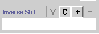
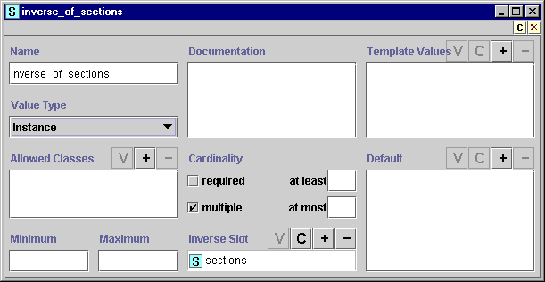
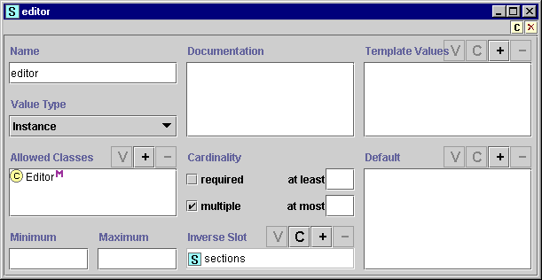

Creating an Inverse Slot Relationship
Creating an Inverse Slot Relationship

The Inverse Slots widget on the Slot Form allows you to create an inverse
relationship between two slots of type Class or Instance. For this to work
correctly, your two slots and the classes where they appear must be designed
appropriately. For slots of type Instance, the following situation provides
optimal results:
- All classes where the first slot is attached appear in the Allowed
Classes pane for the second slot.
- All classes where the second slot is attached appear in the Allowed
Classes pane for the first slot.
However, depending on the structure of your knowledge base, this may not be
appropriate or feasible. Other situations are also valid. For example, suppose
slots A and B are inverse slots. If one of the allowed classes for slot A does
not have B as one of its attached slots, all that happens is that inverse slot
value does not get created for those instances. The inverse relationship will
still work normally for those allowed classes that do have slot B attached.
A slot can have at most one inverse slot. For more information on designing an inverse slot relationship, see Understanding Inverse Slots.
Note that if you create an inverse slot relationship after instances have
been created, existing instances will not display the inverse slot information.
You can create an inverse slot relationship in one of two ways:
You can also modify inverse slot relationships:
Linking Two Existing Slots
To create an inverse slot relationship between two existing slots, the slots
you choose must be of value type Class or Instance. To create the relationship:
- Open the Slot Form for one of the two slots.
You can do this from the in the Class Tab, or from the Slots
Tab. Which of the two slots you choose does not matter.
- Click the Add
 button at
the right of the Inverse Slot field. If the button is grayed out, you cannot
create an inverse slot for the selected slot. Make sure the slot is of type
Class or Instance.
button at
the right of the Inverse Slot field. If the button is grayed out, you cannot
create an inverse slot for the selected slot. Make sure the slot is of type
Class or Instance.

- Select the slot you want to use from the Select Slot dialog box. Only
slots of type Class or Instance will appear.

- Click OK. The two slots will now be inverses of each other. You can view
the Slot Form of the second slot by double-clicking on its name in the
Inverse Slot field. You will see that it already has the first slot filled
in as its inverse slot. It is also good to verify that the Allowed Classes
of each slot contains all the possible classes where the other slot will
appear.
Creating a New Inverse Slot
To create a new slot and make it the inverse of a slot:
- Open the Slot Form for the slot you want to
create an inverse for. You can do this from the in the Class Tab, or
from the Slots Tab. Which of the two slots you
choose does not matter.
- Click the Create
 button at the right of the Inverse Slot form. If the button is grayed out,
you cannot create an inverse slot for the selected slot. Make sure it is of
type Class or Instance.
button at the right of the Inverse Slot form. If the button is grayed out,
you cannot create an inverse slot for the selected slot. Make sure it is of
type Class or Instance.
- A new class of type Instance is created. The Slot Form for the new class
opens automatically.

- Name the slot.
- To ensure that the reciprocal relationship works correctly, add the
classes where your original slot appears to the Allowed
Classes field.
- Make any other changes to the slot definition.

- Attach the new slot to the classes where you wish it to appear. Remember
that attaching a slot to a class also attaches it to all subclasses of the
class.
Removing an Inverse Slot Relationship
Removing the inverse slot relationship removes the link between the two classes.
Note that if you remove an inverse slot relationship after instances have
been created, existing values that were created by the inverse slot relationship
are not removed. Removing an inverse slot only affects the values of new
instances. To
remove the inverse slot relationship between two slots:
- Highlight the Inverse Slot field in the Slot Form for either one of the
two slots.
- Click the Remove
button at the right of the Inverse Slot field. The slot relationship will be
removed.
Replacing an Inverse Slot
Replacing the inverse slot relationship at a slot removes the link to the
original inverse slot and makes a link with a different, existing, slot. Note that if you
replace an inverse slot relationship after instances have
been created, existing values that reflect the original (replaced) inverse slot
relationship are retained. Replacing an inverse slot only affects the values of
new instance. To
replace an inverse relationship:
- Select the slot you want to have a different inverse.
- Click the Add button at
the right of the Inverse Slot field.
- Select the slot you want from the Select Slot dialog box.
- Click OK. The new slot becomes the inverse slot of the current slot. The
original inverse slot is now unlinked from the slot where you made the
change and no longer has an inverse slot.
Next: Creating a Subslot
Slots Table of Contents